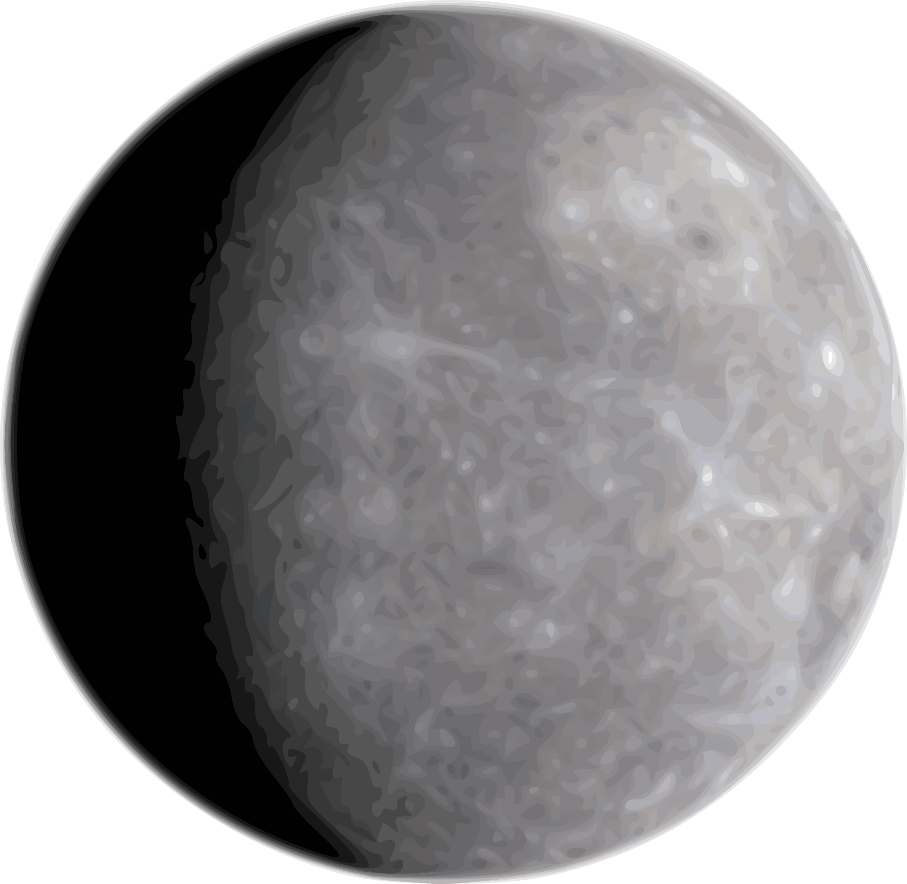
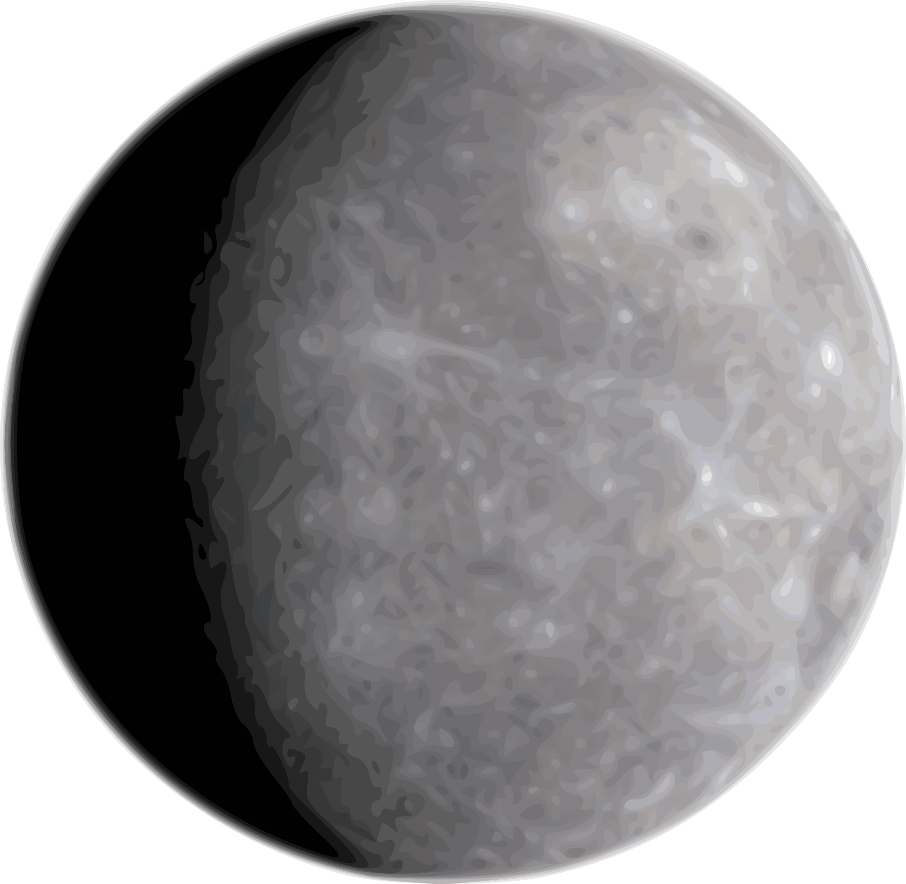

The farthest planet of the Solar System with the most powerful wind speeds out of all the planets.Neptune has a radius of 15.387 miles or 24.764 kilometers.It has an average temperature of -214 degrees Celsius;-353 degrees Fahrenheit.Wind speeds blowing westward on the equator reach up to 2,160 kilometers or 1.324 miles per hour.Neptune also has 14 known moons.Since it is the farthest planet from the Sun it has the longest orbital duration, completing a trip around the Sun in about 165 years. However, one sidereal rotation or day on Neptune is completed in 16.11 hours.Uranus is Neptune’s near twin in size and composition.In 2011 Neptune completed its first 165-year orbit since its discovery in 1846, meaning we have witnessed just 1 Neptunian year.
The Sun is 900 times dimmer on Neptune than on Earth.Most languages use some variant of the name “Neptune” for the planet. In Chinese, Vietnamese, Japanese and Korean, the planet’s name was translated as “sea king star” while in Mongolian it is called Dalain VanNeptune has gravity at 1 bar of 11.15 m/s2, 1.14 times the surface gravity of Earth, and surpassed only by Jupiter who has a gravity of 24.79 m/s².A total of 58 Earths can fit in Neptune.